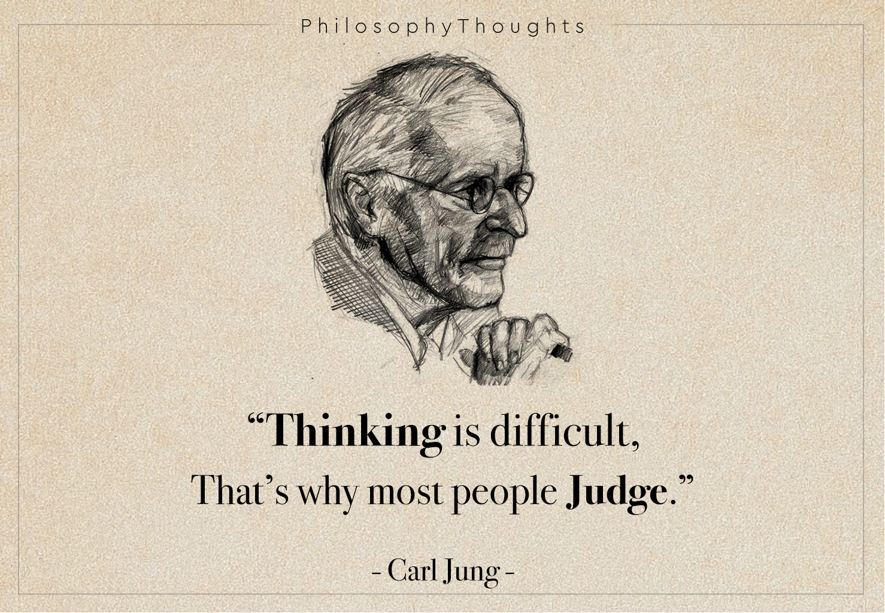

My Poems
1) सत्य सरल है
निकल पड़ा हूं ढूंढने,
मेरे लिए जो गूढ़ है।
धधक रहा जो सीने में,
वो जानता जरूर है।
के जब कभी अकेले में,
खो जाऊं चिंतनों के मेले में।
बैठी वो एक हूर है,
करती मुझे मशहूर है।
कोई और भी क्या है यहां,
फिर सोचना फिजूल है।
ये मैं हूं या कोई और है,
अंधियारा था जो, अब सौर है
काल भी ठहर गया,
तरंग को लहर किया।
मैं रुक नहीं अब पा रहा,
ये रस कहां से आ रहा,
समझ भी नही पा रहा,
समझना भी एक भूल है,
समझ नहीं ये स्थूल है।
निर्मूल और समूल में
अंतर नही कोई मूल है।
फिर ये अचानक क्या हुआ,
अब तक था मैं सोया हुआ
स्वप्न में रस रूप था,
और सत्य बड़ा कुरूप था।
2) इक ख्वाब
इक ख्वाब करके याद यूं, चकित मैं होना चाहता हूं,
ये छल अचेतना का भ्रम, क्यों भ्रम में खोना चाहता हूं ।। १ ।।
आनंद ढूंढता हुआ, यूं आनंद के परे हुआ ,
चंचल सा मैं, मेरा ये मन, तटस्थ फिर दृदय हुआ।
फिर देखकर के एक , रूप के लुभावन को,
आजीवन बस मैं यूं ही, रूपमग्न होना चाहता हूं
इक ख्वाब करके याद यूं, चकित मैं होना चाहता हूं,
ये छल अचेतना का भ्रम, क्यों भ्रम में खोना चाहता हूं ।। २ ।।
मैं दुत्कारी भौतिकता का, अब संशय का साथी हूं
अब खोजी कोई रहा नहीं , मैं तो उस स्वप्न का वासी हूं।
वियोग के विनाश को और प्रेम की एक श्वास को,
तद् स्वप्न लीन होना चाहता हूं,
इक ख्वाब करके याद यूं, चकित मैं होना चाहता हूं,
ये छल अचेतना का भ्रम, क्यों भ्रम में खोना चाहता हूं ।। ३ ।।
कोई न उसे असत् कहो, हे संसारियों कुछ रहम करो,
वही तो एक मात्र सत् लगा, मुझे मेरा जगत लगा,
जीवन मेरा चरणों में उसके दान करने के लिए,
मैं जी भर के सोना चाहता हूं
इक ख्वाब करके याद यूं, चकित मैं होना चाहता हूं,
ये छल अचेतना का भ्रम, क्यों भ्रम में खोना चाहता हूं ।। ४ ।।
क्यों स्वप्न वह अब आता नहीं, संयोग हो पाता नही
ये कष्ट मैं नहीं सह पा रहा, क्या तुमसे भी सहा जाता नहीं
जिस लोक में तुम लुप्त हो,
उसी लोक का होना चाहता हूं
इक ख्वाब करके याद यूं, चकित मैं होना चाहता हूं,
ये छल अचेतना का भ्रम, क्यों भ्रम में खोना चाहता हूं ।। ५ ।।
3) प्रेम ही सत्य है
मन देखे जब तुमको तो बस भोग नज़र ही आता है,
पर मैं देखूं जब तुमको फिर तो मन ही ये मिट जाता है।
मन देखे जब तुमको तो बस घर्षण ही हो पाता है,
पर मैं देखूं जब तुमको तो सत्दर्शन ही हो जाता है।
फिर मैं सोचूं ये मन तो मेरा मुझको ही दम्भ दिखाता है,
ये सच के नाम पे बस मुझको एक परदा ही दिखलाता है।
सुंदरता क्या है तुममें अब ये मन बेचारा क्या जाने,
मुख में जो तुम्हारे ज्योति है वो ये अंधियारा क्या जाने।
मन मेरा हो या तुम्हारा हो, ये दोनों ही अज्ञानी हैं,
जीवन ये हमारा सतत् विशाल आह्लाद की कहानी है।
पर कौन हमें ये सत्य दिखाए , अमृत की वर्षा कर जाए,
कौन कहे सुंदरता की गाथा, कौन है उस आनंद का दाता।
हम तो अधरों पर ही अटके हैं और सुंदरता थोड़ी हटके है,
तन का कोई विश्वास नहीं, डूबो उसमें जिसका ह्रास नही।
पर इतना विशाल संसार में क्या, फिर तन इतना बेकार है क्या,
ये तन आनंद की सीमा है, और सीमित जीवन किसे जीना है।
बस प्रेम की सब खोज करो, कुछ और नहीं बस खुद का हौज भरो,
फिर सब कुछ नया हो जाएगा, बस प्रेम ही नृत्य दिखायेगा।
फिर पेड़ फूल पौधे हर कोई संग तुम्हारे गाएंगे,
और हम भी उस सत्य के साथ प्रेम में पड़ जाएंगे।
Philosophical Writings

Psychological Aspects Of Time (By J. Krishnamurthy)
What is the meaning of time psychologically? I am not adequately equipped to engage in this discussion, so why am I expending effort on it? My aim is not to impart the knowledge I have acquired here (as such knowledge does not exist), but rather to provide insight and aid in understanding Jiddu Krishnamurthy's perspectives on this matter. I am not advocating blind acceptance of these views, but rather encouraging the formation of individual perspectives rooted in reasoned and rationalized thinking, which will be more robust than K's viewpoints....
Read more
The Untold Truth Behind The Origin of Buddha
Around 600-543 BC , a trivial person named “Siddhartha” born in the Kapilvastu region near the foothills of Nepal in the kingdom of “Suddhodhan” ,the king of kapilvastu to challenge the contemporary stereotypes belonging to the Vaidik tradition.
There is a famous anecdote going 2500 BC back regarding the prince....
Read more
Truth is right there, why do we not see it ?
This blog delves into a captivating exploration of the diverse yet interconnected perspectives. We’ll journey into the philosophical world of Krishnamurti, known for challenging traditional thought and advocating for personal discovery. We’ll encounter the clear and insightful explanations of Walpola Rahula, a preeminent figure in introducing Buddhism to the West. Finally, we’ll delve into ....
Read more
Nietzsche On Objects
All of us are well aware of the fact that Friedrich Nietzsche is concerned with ethics, but he is also interested in metaphysical inquiry. One can argue that in many of his works, he remarks on the attack on metaphysics, but it is not true. He attacks a particular approach rather than the general ideas—not ideals—of metaphysics. For instance ....
Read more
Nietzsche as an Anti-Constructivist : Overview
In this blog, we discuss the facts that deny that Nietzsche was a social object constructivist. The meaning of objects should be very clear before we delve deeper. For Nietzsche, objects do not exist solely in the mind. In 'Beyond Good and Evil,' you can find some sections which seem to support the phenomenalist view of objects, such that objects are identical to our perceptions, memories, conceptions, and ideas, etc., but still ....
Read more
Nietzsche as an Anti-Constructivist : Constructivism and Objectivism
It seems reasonable to think that something is created when there is a well-defined intention to create it and something is socially created when there is a group of intentional agents. If some parts of chairs or tables are assembled by an agent, then we can say that ....
Read more
Nietzsche as an Anti-Constructivist : Commonsense Realism
In his writings, Nietzsche explores the concept of objects as more than mere entities. These ordinary objects, such as dogs and trees, possess intrinsic qualities that exist independently of our perceptions or beliefs. This philosophical stance is known as ....
Read more